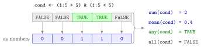

Counting with Logical Vectors¶
Definition¶
When R does arithmetic on a logical vector, it treats TRUE as 1 and FALSE as 0 (type coercion). For a non-empty logical vector cond without missing values:
sum(cond)is the number ofTRUEentries;mean(cond)is the proportion ofTRUEentries,sum(cond) / length(cond);any(cond)isTRUEif at least one entry isTRUE;all(cond)isTRUEif every entry isTRUE.
identical(x, y) returns a single TRUE or FALSE: whether x and y are exactly the same object, with the same values in the same order, the same storage type and the same attributes such as names.
Interpretation¶
A comparison gives one answer per element; these functions turn the answers into one number or one verdict for the whole vector. "How many workers earn more than 60,000?" is sum(pay > 60000), and "what share of them?" is mean(pay > 60000).

The figure uses the condition (1:5 > 2) & (1:5 < 5), which is TRUE for the values 3 and 4 only. Read as numbers, the answers are 0, 0, 1, 1, 0: their sum is the count 2 and their mean is the proportion . At least one entry is TRUE, so any() is TRUE; not all of them are, so all() is FALSE.
Mathematically, each TRUE/FALSE is the value of an indicator function, and for a vector the sum counts the elements above . Dividing by gives a relative frequency, the sample counterpart of for an indicator random variable. The same idea turns many simulated draws into an estimated probability later in the course.
Missing values need care. sum() and mean() return NA as soon as one entry is NA, while any() and all() still answer when the missing value cannot change the verdict: any(c(TRUE, NA)) is TRUE, because one TRUE is enough, but sum(c(TRUE, NA)) > 0 is NA (missing values).
A common mistake is to check "the same vector" with x == y. That gives one answer per element, not one answer, and it treats the double c(1, 2) and the integer c(1L, 2L) as equal. Use all(x == y) for "all values equal" and identical(x, y) for "exactly the same object".
Key Results¶
sum(cond)counts theTRUEentries;mean(cond)is their proportion, a number between 0 and 1.sum(cond) > 0is equivalent toany(cond), andsum(cond) == length(cond)toall(cond), whencondhas noNA.any()andall()returnNAonly when the missing entries could change the answer;sum()andmean()returnNAwhenever an entry is missing, unlessna.rm = TRUE.identical(x, y)compares values, order, storage type and attributes and returns a single logical value:identical(c(1, 2), c(1L, 2L))isFALSE.- For an empty vector,
any()isFALSE,all()isTRUEandmean()isNaN(not a number).
Examples¶
1. Counting and proportions. How many of the numbers 1 to 5 are greater than 2 but less than 5, and what share is that?
cond <- (1:5 > 2) & (1:5 < 5)
cond
#> [1] FALSE FALSE TRUE TRUE FALSE
sum(cond)
#> [1] 2
mean(cond)
#> [1] 0.4
2. Any and all, two ways. For a vector without missing values, the sum answers both questions; any() and all() say it directly.
cond <- (1:5 > 2) & (1:5 < 5)
sum(cond) > 0
#> [1] TRUE
sum(cond) == length(cond)
#> [1] FALSE
any(cond)
#> [1] TRUE
all(cond)
#> [1] FALSE
3. Missing values. One unknown entry affects the four functions differently.
any(c(TRUE, NA))
#> [1] TRUE
sum(c(TRUE, NA)) > 0
#> [1] NA
all(c(TRUE, NA))
#> [1] NA
all(c(FALSE, NA))
#> [1] FALSE
sum(c(TRUE, NA, FALSE), na.rm = TRUE)
#> [1] 1
all(c(TRUE, NA)) is NA because the missing entry decides whether all are true; all(c(FALSE, NA)) is already FALSE. With na.rm = TRUE, sum() counts the TRUE entries among the observed ones.
4. Equal values versus identical objects. ==, all() and identical() answer different questions.
identical(c(1, 2, 3), c(1, 1, 3))
#> [1] FALSE
identical(c(1, 2, 3), c(1, 2, 3))
#> [1] TRUE
c(1, 2) == c(1L, 2L)
#> [1] TRUE TRUE
all(c(1, 2) == c(1L, 2L))
#> [1] TRUE
identical(c(1, 2), c(1L, 2L))
#> [1] FALSE
The values are equal, so == and all() say TRUE, but one vector is stored as double and the other as integer (atomic data types), so identical() says FALSE.
Prerequisites¶
Related Concepts¶
- Logical Subsetting
- Membership Operator %in%
- Missing Values
- Summary Statistics in R
- Indicator Function
- Indicator Random Variable
Sources¶
- Programming for EOR · Week 2
- Lecture 2 script, Part 1 (Conditional Operations and Sequences), section Checking conditions across a vector
Aliases: sum of a logical vector, proportion TRUE, any(), all(), identical(), any, all, identical Keywords: sum() counts TRUE, mean() gives a proportion, any() and all(), identical() Symbols: sum
Last updated: 10 November 2026 16:43
Counting with Logical VectorsMonte Carlo SimulationComparison OperatorsLogical OperatorsType CoercionLogical SubsettingMembership Operator %in%Missing ValuesSummary Statistics in RIndicator FunctionIndicator Random Variable